Hello, I'm Denzel Gymnastiar Setiawan
23 Years Old Multimedia Designer with 5+ years of experience delivering end-to-end visual solutions across corporate and marketing needs. I specialize in transforming ideas into impactful visual content ranging from video production and graphic design to UI design.
A comprehensive look into my professional journey and background.
Hello I am Denzel Gymnastiar Setiawan, a 23-year-old Informatics graduate from STTI NIIT I-TECH with a strong foundation in Multimedia from SMK Wikrama Bogor. Although I am a fresh graduate, I bring more than 5 years of hands-on experience managing creative and multimedia projects in professional environments.
PT Global Service Indonesia · Full-time
(Part of PT United Tractors Tbk, Member of Astra)
PT WIR Asia Tbk · Internship
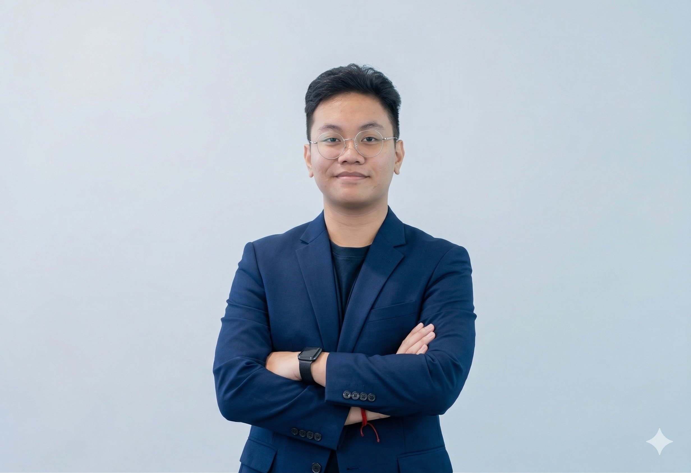
Information & Technology Major
STTI NIIT I-Tech
Multimedia Major
SMK Wikrama Bogor
End-to-end multimedia production, from concept development, shooting, design, to final delivery, supporting marketing campaigns and corporate communication initiatives.
Editing & Broadcasting
A seamless journey of excellence from 2018 to 2025.
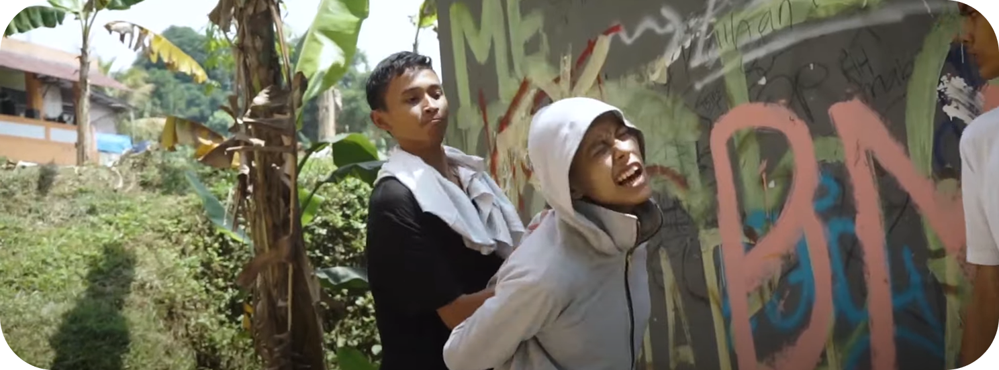
Academic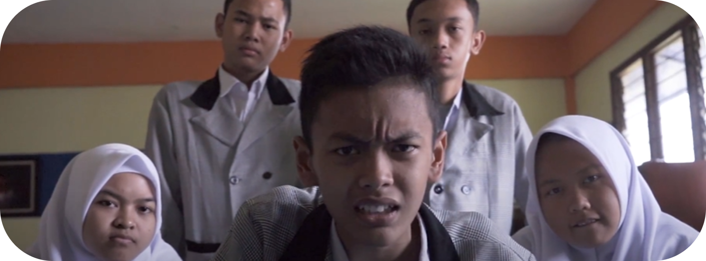
Academic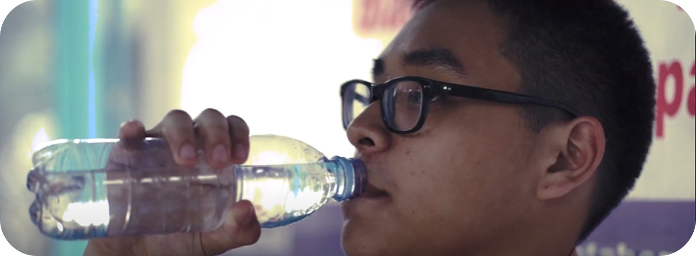
AcademicASIAN Int. Children's Film Festival
Represented Indonesia in Tokyo & Hokkaido, Japan.
Watch Film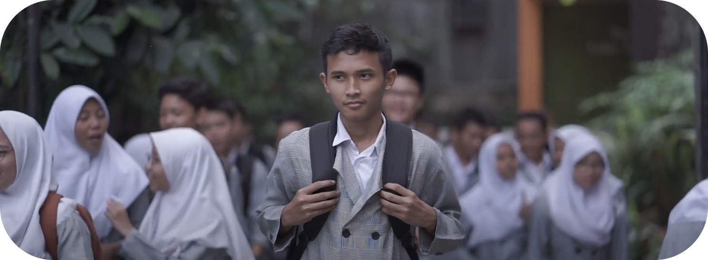
AcademicYayasan Karya Bakti United Tractors
Early professional recognition within Astra group.
BD & MKT Dept, PT GSI
Awarded for exceptional work ethic.
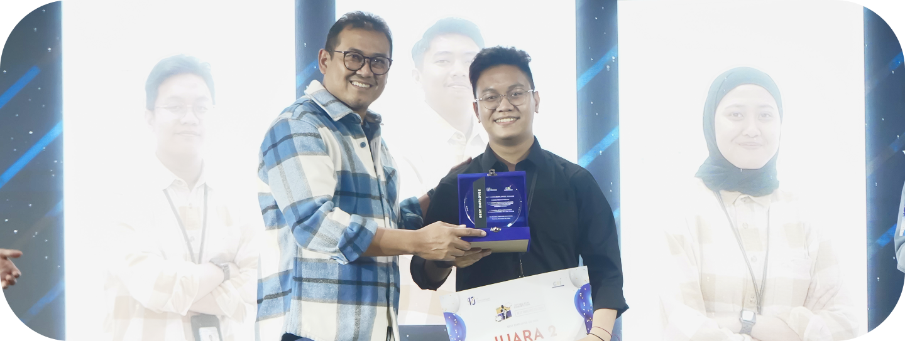
ProfessionalPT Global Service Indonesia
2nd Place in Head Office Category.
PT Global Service Indonesia
Recognition for dedicated long-term service.
A curated selection of my professional and creative projects.
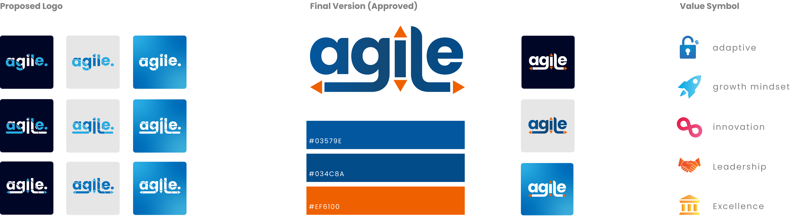
AGILE is the successor to HEART, the previous core value of PT Global Service Indonesia. AGILE stands for Adaptive, Growth Mindset, Innovative, Leadership, and Excellence. Officially adopted in early 2023, AGILE marks a new chapter in the company’s cultural transformation.
My role in this project went beyond just creating a logo or a symbol—I actively participated in the brainstorming process, helping define the visual representation and deeper meaning behind each of the five AGILE values. I’m proud to have been part of this initiative, contributing to a milestone in the company's business transformation journey.
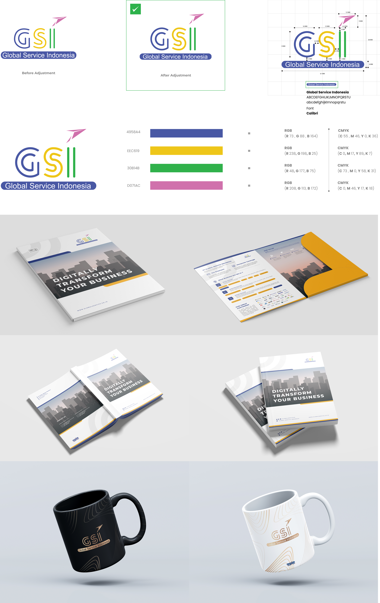
Since its establishment on December 24th, 2014, PT Global Service Indonesia (GSI) had never officially developed a comprehensive branding or corporate identity. In 2022, I took the initiative to create a company logo and refine the brand identity.
This included adjusting the logo symbol to achieve better precision and balance between the shapes and text, as well as defining a clear color code. The goal was to ensure consistency and usability across various applications—especially for strengthening the company’s visual identity and supporting its professional image.
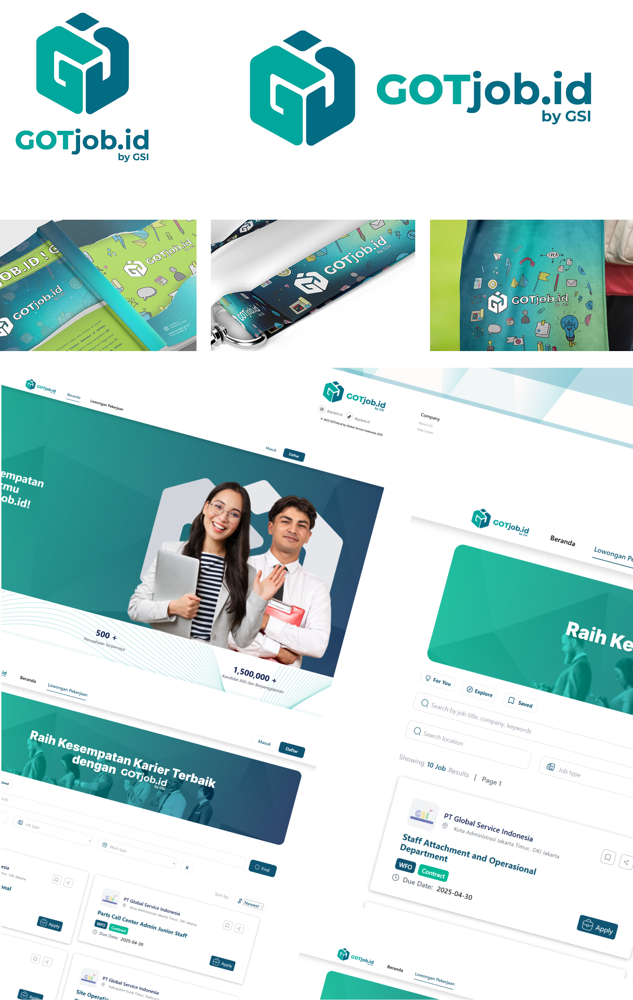
GOTJob.id is an initiative launched by PT Global Service Indonesia in 2023, aimed at creating a more efficient digital job portal that could reach a wider pool of talented candidates.
By the end of 2023, the job website “gotjob.id” was officially launched, featuring the logo that I had the opportunity to design. I’m proud to have been part of this innovative project, contributing to the company's efforts in expanding its digital presence and modernizing its recruitment approach.
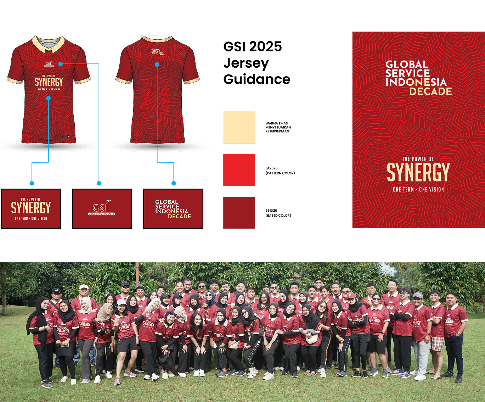
Official employee jersey design for PT Global Service Indonesia for the year 2025.
At the beginning of each year, I take on a creative role in organizing and participating in the Annual General Shareholders Meeting. One of my main responsibilities during this event is to design and produce the Annual Report in book form. Since joining PT Global Service Indonesia in November 2020, I have been involved in four Annual General Shareholders Meetings. Each year, I develop a unique visual and thematic concept for the report, aligning it with the company’s tagline or strategic goals for that year.
As part of the creative process, I utilize various design tools such as Adobe Illustrator, Photoshop, InDesign, and Figma to bring each concept to life—ensuring a professional and cohesive result. Most recently, in 2024, the theme of the Annual Report was "Green Sustainable Business Growth." I’m proud to contribute creatively to such an important corporate milestone each year.
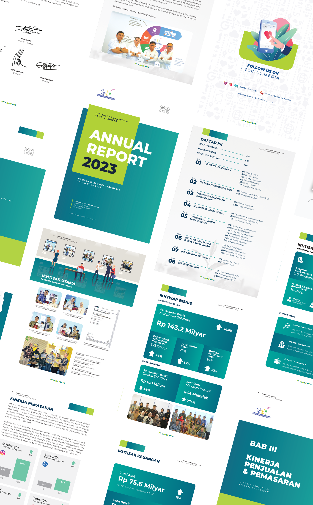
This year marked a new chapter in the company’s journey as we celebrated our 10th anniversary. Over the past decade, we have strived to become a truly trusted partner for all our valued customers. To commemorate this milestone, our anniversary theme was: “A Decade of Transformation: Enhance Growth for the Future.” My task is to ensure the visual of the book is aligned with the message that we bring to all of our shareholders and partners.
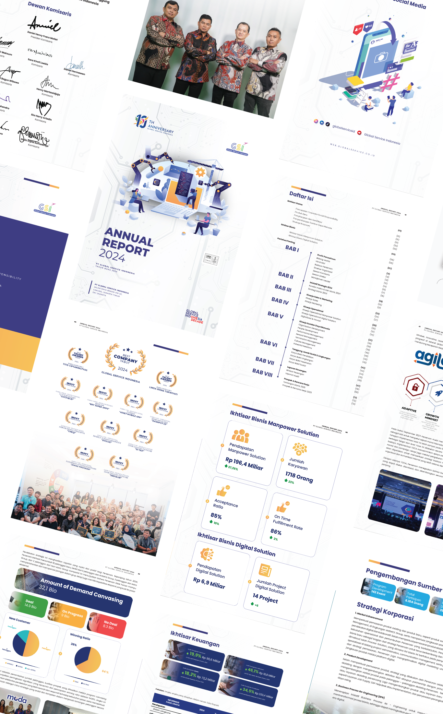
Each year, the company holds several events to celebrate our anniversary. For these kinds of events, visuals are a key element in bringing the celebration to life. For this reason, I am usually given the task of creating a special symbol, particularly the number representing our anniversary year, to serve as a visual identity for that year’s celebration.
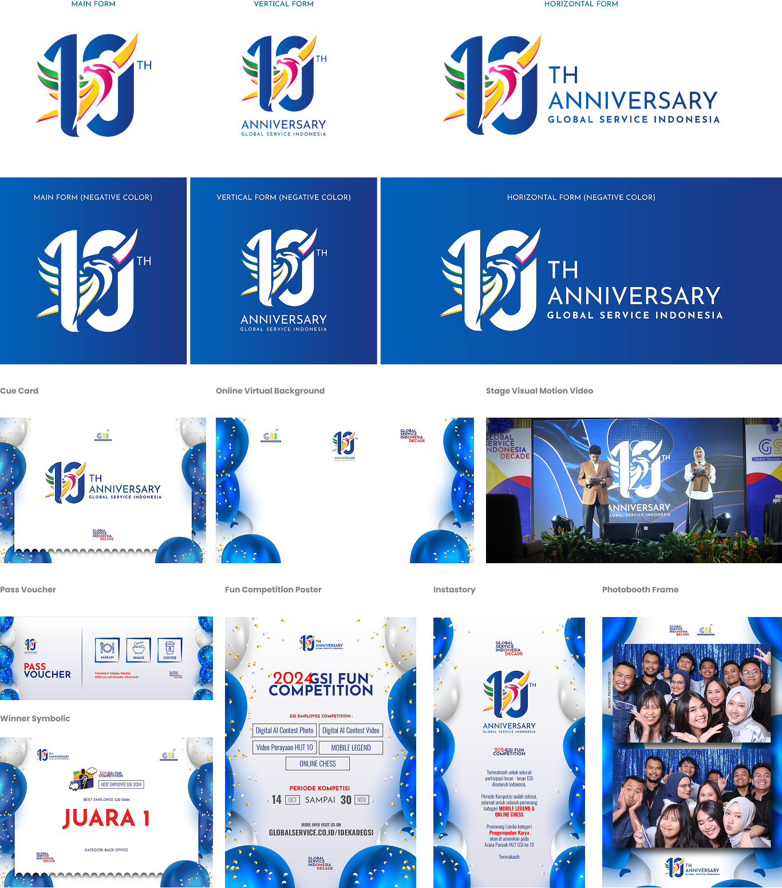
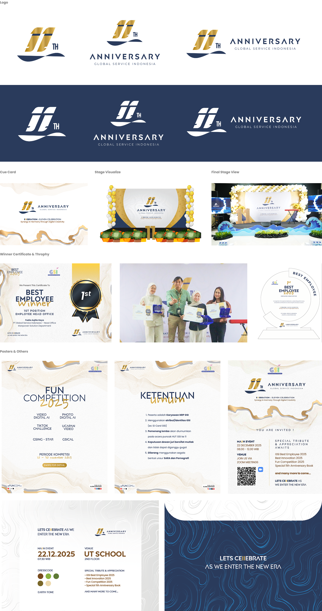
In 2025, the Management of PT Global Service Indonesia planned to give a small token of appreciation to engage every member of the GSI Head Office team in recognition of the achievements accomplished throughout 2024. As part of this initiative, management entrusted me with the task of creating a memorable keepsake that captures the journey from 2024 to mid-2025 in the form of an employee yearbook—similar to a student end-of-year book, but designed specifically for employees.
I was given full creative freedom to develop the overall concept, visual design, and execution, encompassing the entire process from individual employee photoshoots to the final publication of the book.
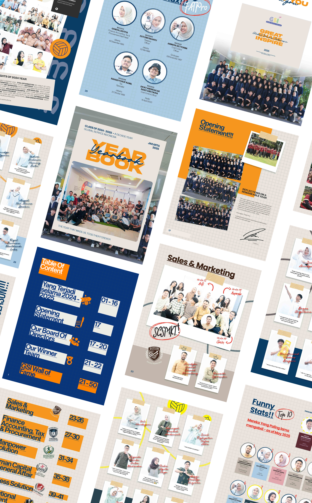
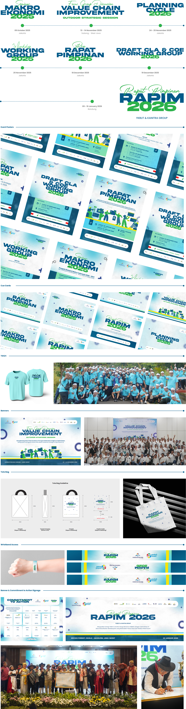
This year, Global Service Indonesia Holdings, under the umbrella of Yayasan Karya Bakti United Tractors a member of Astra and part of the United Tractors Group, is hosting a series of events to kick off the year 2026. For events of this scale, visuals play a vital role in bringing the experience to life and strengthening the overall atmosphere.
Therefore, I was entrusted with creating a special event key visual that serves as the main visual identity for this year’s series of events.
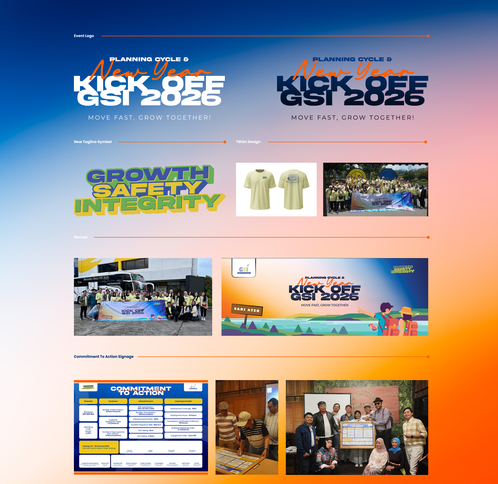
This year, Global Service Indonesia is hosting a kick-off event to mark the beginning of 2026. In this event, visuals are a key element in shaping the experience, creating energy, and setting the tone.
For that reason, I was responsible for bringing the event to life through carefully crafted digital visuals.
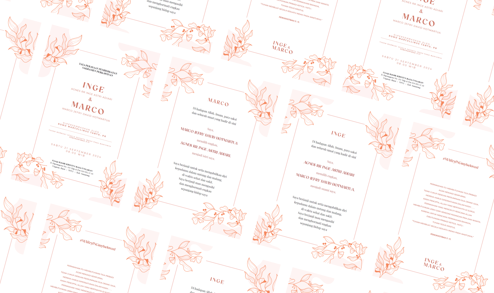
A professional book cover design and layout for a Marriage Sacrament celebration guide. This project focuses on elegant typography and a clean, sacred visual aesthetic suitable for solemn religious ceremonies.
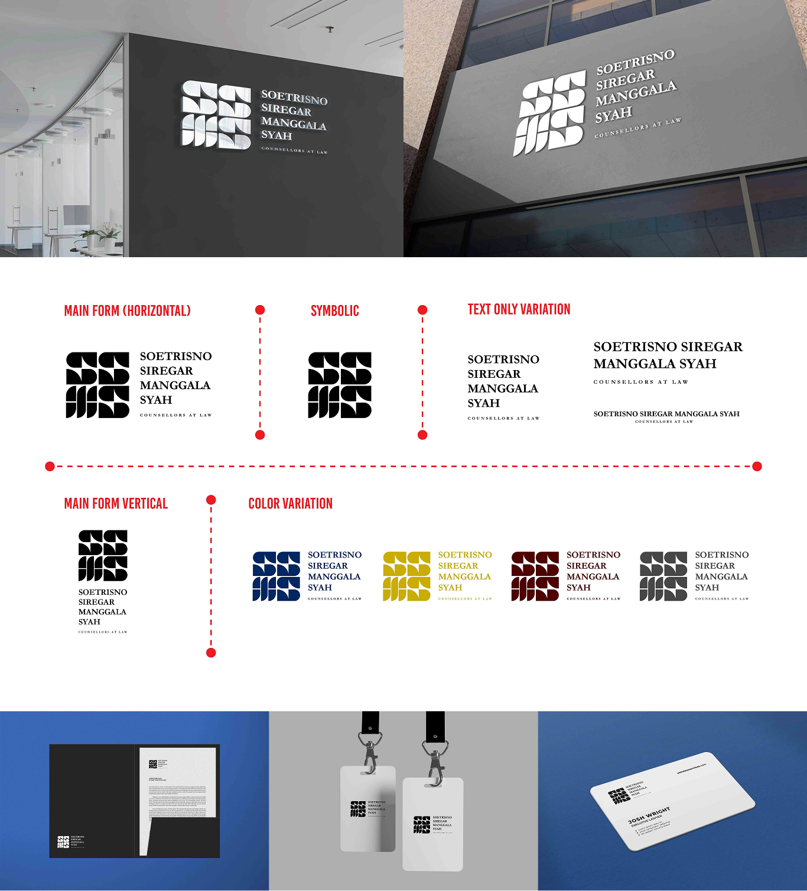
A comprehensive personal branding and logo design project for Soetrisno Siregar Manggala Syah. This project involves crafting a distinct visual identity, including logo construction, color palette selection, and presenting the brand guidelines effectively.
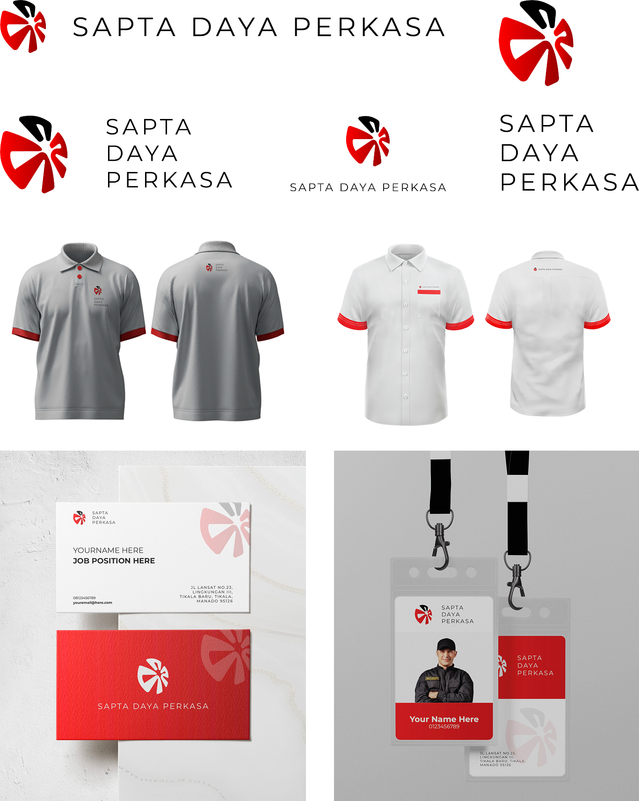
A personal branding initiative focused on creating a strong, meaningful, and versatile logo identity for Sapta Daya Perkasa. The project encompassed the initial concept design, visual exploration, through to the final brand presentation.
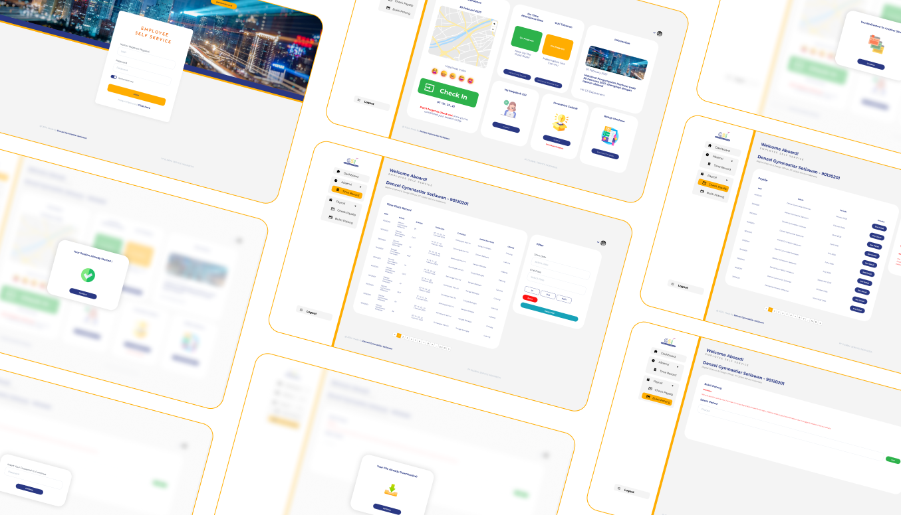
In 2024, PT Global Service Indonesia initiated a plan to revitalize its main attendance system. The previous system had not been developed with a comprehensive analysis of website layout principles and user interface standards.
In this year, I was given the opportunity to contribute as a UI Designer in redesigning the Employee Self-Service platform. The goal of this initiative was not only to strengthen PT Global Service Indonesia’s branding, but also to enhance usability and improve the overall user experience for all employees.
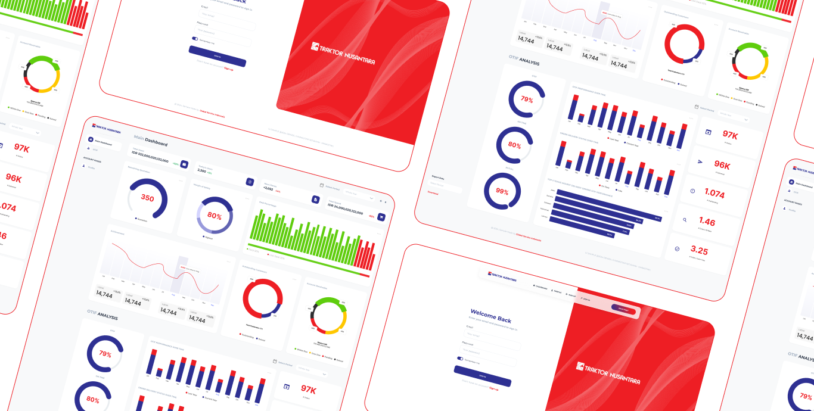
Following the successful implementation of the Employee Self-Service UI project, I was once again entrusted with the next UI initiative.
I contributed by designing a sample user interface for the main dashboard of PT Traktor Nusantara, a project managed by the IT team of PT Global Service Indonesia, where I was responsible for the overall UI design.
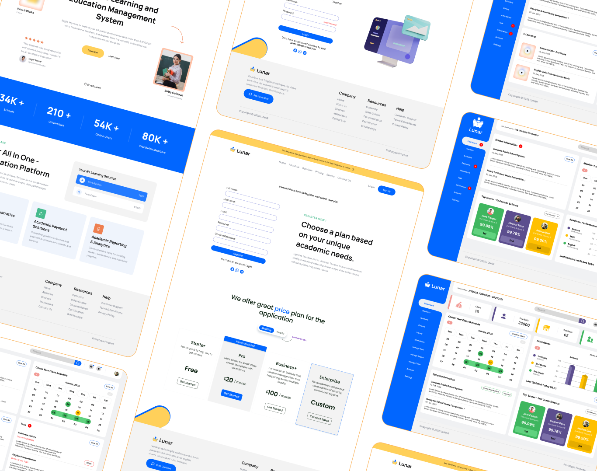
As part of my personal development initiative, I worked on an independent project by exploring and utilizing various UI samples from free design resources. Through this process, I challenged myself to conceptualize and develop a fully structured landing page website.
This project allowed me to experiment with layout composition, visual hierarchy, typography, color harmony, and user flow. By adapting and refining elements from multiple UI references, I aimed to create a cohesive, modern, and user-centered landing page design while sharpening my skills in interface consistency and aesthetic decision-making.
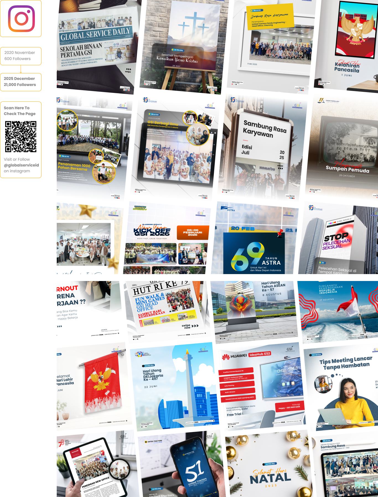
I began managing Global Service Indonesia’s Instagram account in November 2020, when it had around 600 followers. What started as a solo responsibility quickly became a hands-on journey where I handled everything end-to-end — from brainstorming content ideas and defining the visual direction, to building a consistent color system, creating layout variations, and executing the entire production process on my own in the early days. As the account continued to grow, so did the scope of work. What was once a one-person operation gradually developed into a more structured team setup, including an internship team that helped support content production and strengthen our engagement strategy.
Today, the GSI Instagram account has reached approximately 21,447 followers. This growth has been fueled by several key drivers, including high-performing job vacancy posts, practical employee tips and educational content, impactful marketing campaigns, and a timely shift toward short-form and vertical video content to stay aligned with platform trends. While the growth wasn’t overnight, it has been steady, intentional, and meaningful. The account continues to evolve organically, guided by a clear strategy and a strong understanding of its audience.
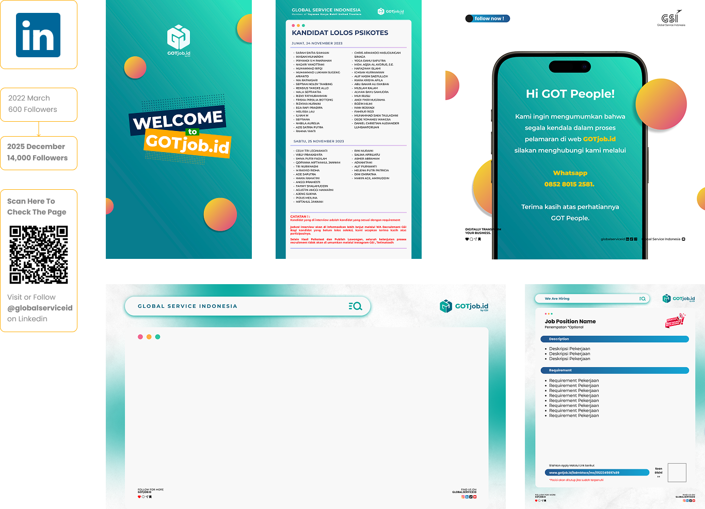
Before 2022, PT Global Service Indonesia had little to no presence on LinkedIn. That changed in mid-2022 when management decided it was time to rebuild and strengthen our digital footprint by re-entering LinkedIn with a completely fresh start. We introduced two primary accounts: a profile account, mainly managed by our recruitment team to source candidates and share job openings, and a company page dedicated to corporate branding, company information, marketing initiatives, and content development. Both accounts started from zero followers. In the beginning, we repurposed content from Instagram and shared it on LinkedIn to keep our messaging consistent across platforms. Since the recruitment team actively managed the profile account especially for hiring and talent acquisition, LinkedIn quickly became an important channel for increasing recruitment visibility.
As time went on, our strategy evolved beyond simply reposting content. We began developing a more tailored approach designed specifically for LinkedIn’s professional audience. This included refining our tone, sharpening our messaging, and adjusting content formats to better fit the platform’s ecosystem. Today, our LinkedIn presence has grown to a combined total of 14,943 followers across both the profile and company pages. This growth reflects our consistent commitment to employer branding, recruitment marketing, and establishing a strong professional presence.
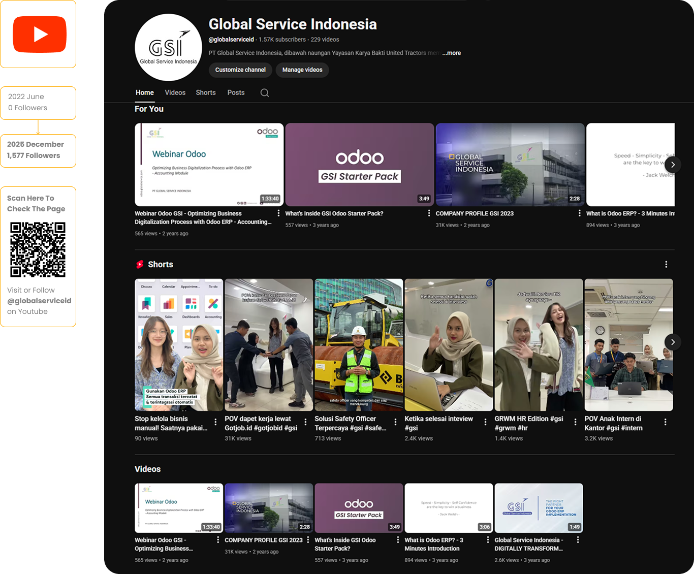
Following the successful management of LinkedIn, within the same year GSI reactivated its presence on YouTube by mirroring selected content into YouTube Shorts and Community Posts. Since the relaunch, GSI has grown to 1,577 subscribers and continues to expand its audience steadily to this day.
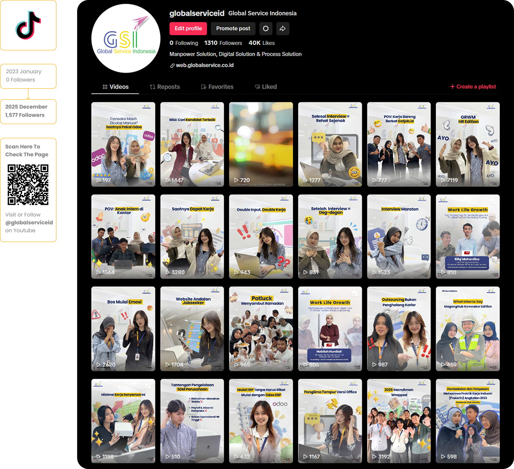
PT Global Service Indonesia began actively expanding its presence on TikTok in early 2023. As the marketing team grew, TikTok developed its own dedicated content strategy, separate from other platforms.
While other members of the marketing team initiated and produced the content, I was responsible for managing the account, monitoring traffic performance, and analyzing growth metrics. By the end of 2025, PT Global Service Indonesia had successfully grown its TikTok account to 1,310 followers.
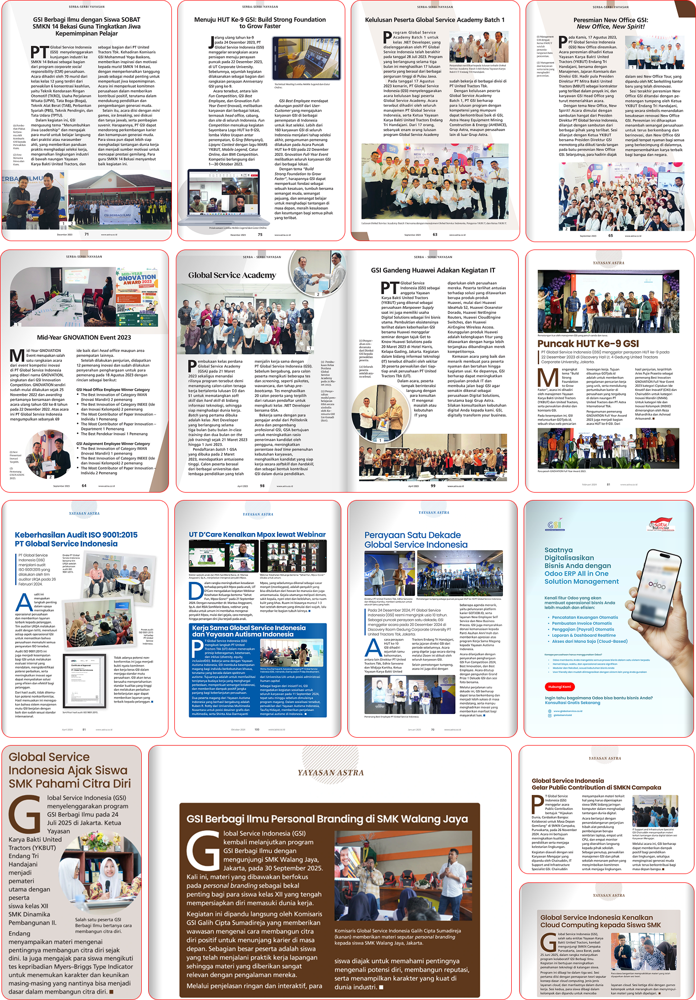
As part of the ASTRA Group and United Tractors ecosystem, I contribute to GSI’s corporate communication initiatives by producing and submitting at least one corporate article each month to our holding organization, Yayasan Karya Bakti United Tractors (YKBUT).
These articles are reviewed and forwarded to the editorial teams at Astra International and United Tractors, where they are curated alongside contributions from companies across the Astra Group and the AHEMCE (Astra Heavy Equipment, Mining, Construction & Energy) network. Selected publications are featured in Astramagz and the AHEMCE Sustainability Bulletin, serving as official communication platforms across the Astra ecosystem.
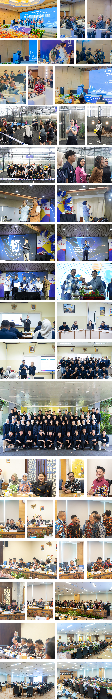
To provide the best viewing experience and high-quality playback, my video and audio projects are hosted on a dedicated showreel site.
Watch My Showreel